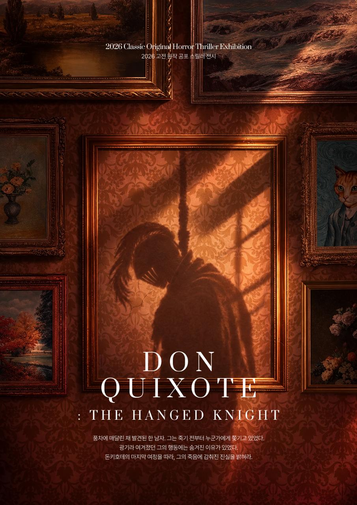
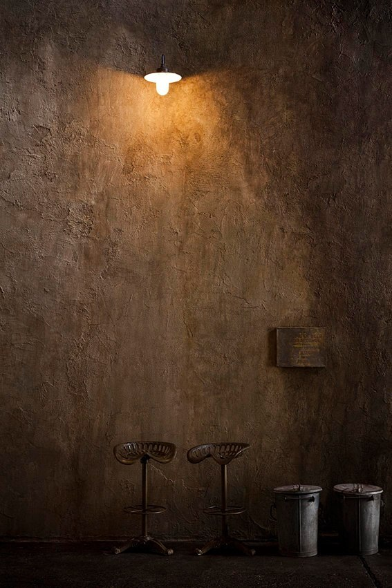
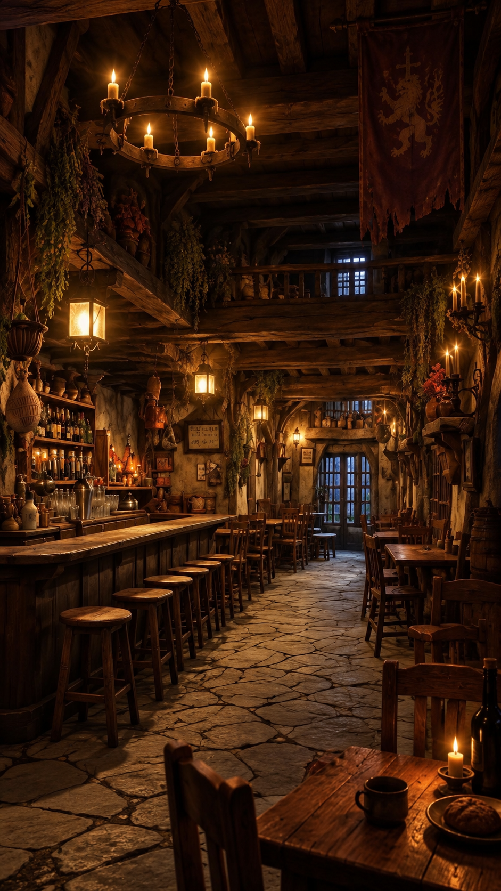
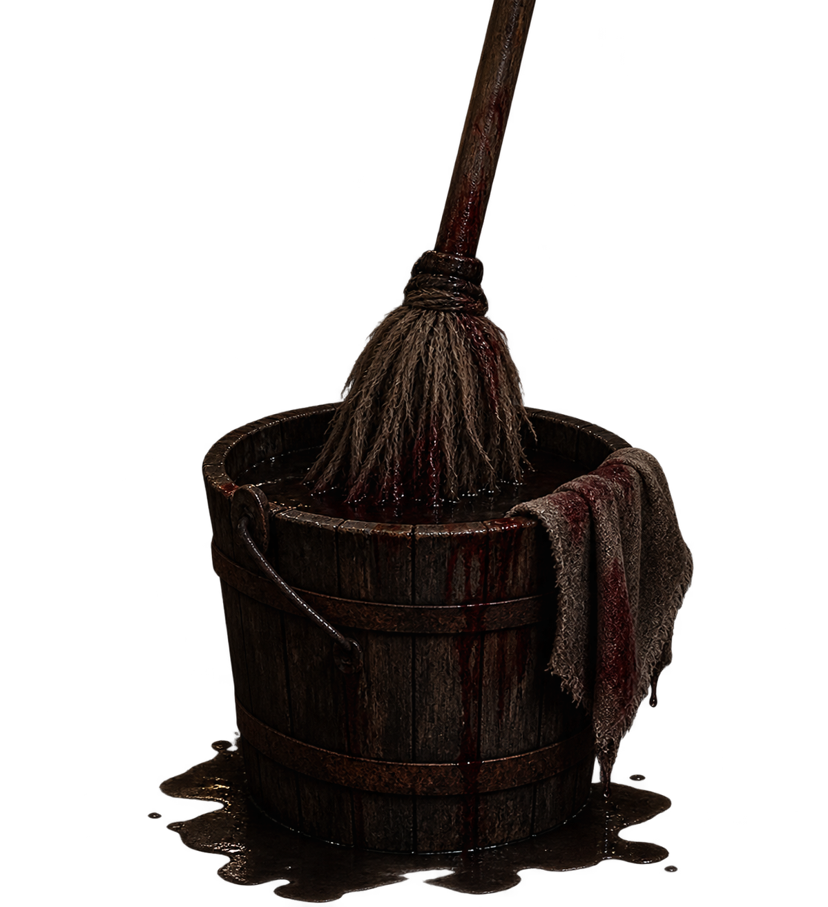
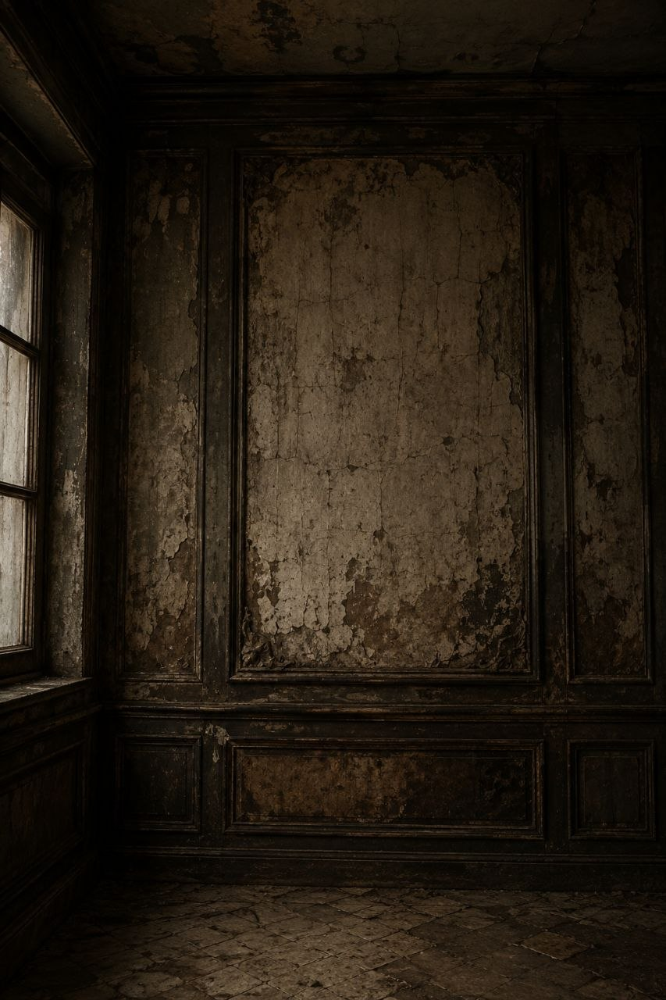
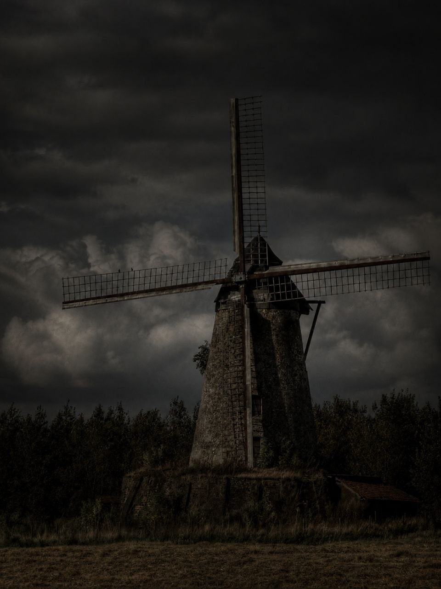
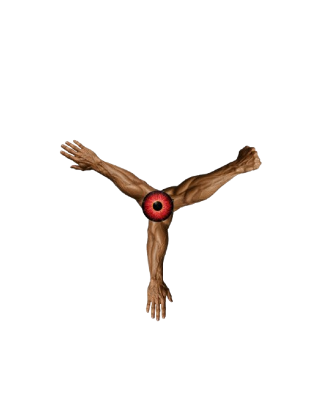
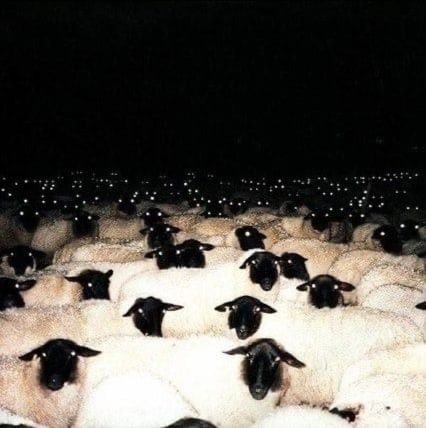

여러분은 지금부터 돈키호테가 지나온
다섯 개의 공간을 따라가며
사건을 추리하게 됩니다.
돈키호테를 죽인 범인은 누구일까요?
단서들이 우리에게 주는 메시지는 무엇일지도
고민하며 즐겨주시면 좋겠습니다.
그럼, 진실을 찾아보겠습니다.
다섯 개의 공간을 따라가며
사건을 추리하게 됩니다.
돈키호테를 죽인 범인은 누구일까요?
단서들이 우리에게 주는 메시지는 무엇일지도
고민하며 즐겨주시면 좋겠습니다.
그럼, 진실을 찾아보겠습니다.

산초의 종자

CHAPTER 0
시체 보관소
산초의 종자
이 분이 바로 돈키호테입니다. 진짜 이름은 알론소 키하노죠.
산초의 종자
수첩에서 다시 한번 확인하실 수 있으니 넘어가도록 하죠.

CHAPTER 1
여관
돈키호테가 기사로서 첫발을 내디뎠던 곳.
조사
여관에서 판매하고 남은 주류와 음식이다.
여관 주인
...그 반지는 어디서 찾았죠?
조사
여관에서 사용하는 벽난로이다.

조사하기
여관 주인
그건 왜요? 청소하시게요?
산초의 종자
이곳은 돈키호테가 "성"이라 칭했던 여관입니다.
산초의 종자
충분히 조사를 마치셨나요?

CHAPTER 2
서재
산초의 종자
산초의 종자
충분히 조사를 마치셨나요?


CHAPTER 3
풍차
산초의 종자
산초의 종자
수첩
CHAPTER 0 — 시체 보관소
아직 기록된 내용이 없습니다.
CHAPTER 1 — 여관
CHAPTER 2 — 서재
CHAPTER 3 — 풍차
CHAPTER 4 — 양떼 목장
CHAPTER 5 — 이발소

CHAPTER 4
양떼 목장
산초의 종자
산초의 종자